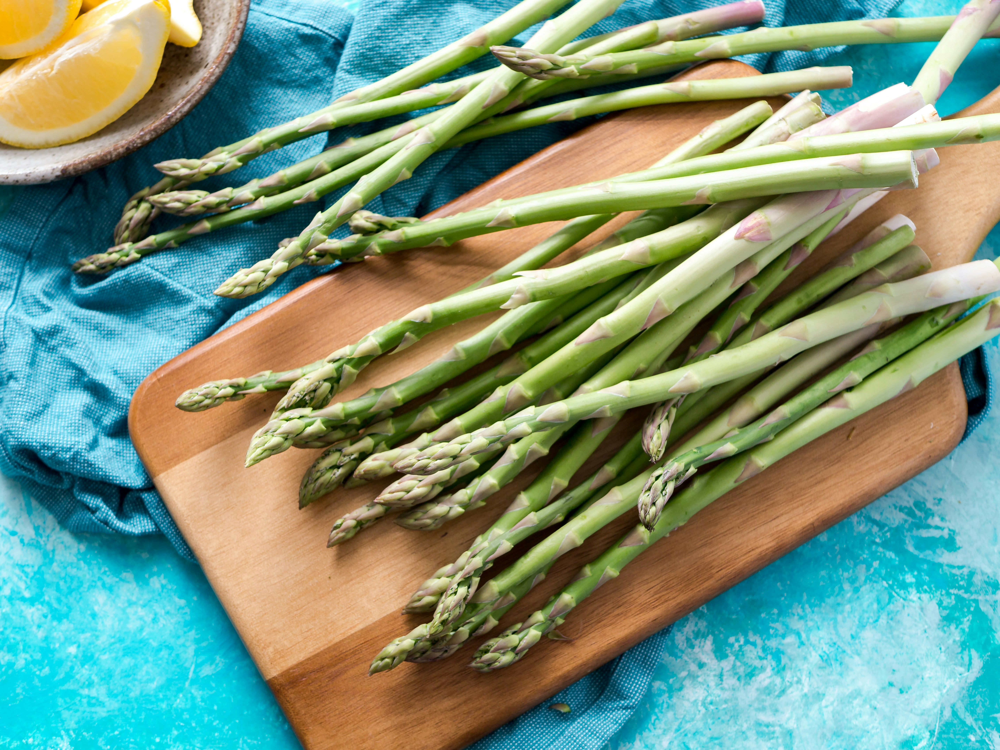

Bacon Wrapped Asparagus Recipe

A simple but savory side dish.
Bacon wrapped asparagus is just the best thing ever.
It's got the healthy benefits of asparagus
and olive oil, while making it more palletable with
bacon cleanly wrapped around.
Ingredients
- 1 pound fresh asparagus, trimmed
- 1 tablespoon olive oil
- 6 slices bacon, or more to taste
- freshly ground black pepper to taste
Steps
- Place asparagus in a large bowl. Pour olive oil over spears and coat each one. Wrap 2 to 3 spears with 1 slice of bacon. Repeat with remaining asparagus and bacon.
- Preheat an outdoor grill for medium heat and lightly oil the grate. Grill asparagus until bacon is crispy, 3 to 4 minutes per side. Season with pepper.
Home